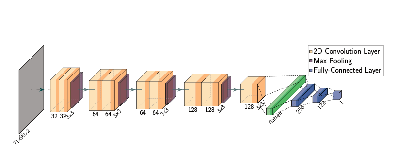

My Projects

Audio-Based Cough Detection in Clinic Waiting Rooms
Description of Project 1. This project focuses on...
Read more on Google Scholar
Project 2 Title
Description of Project 2. The main objective of this project is...
Read more on Google Scholar